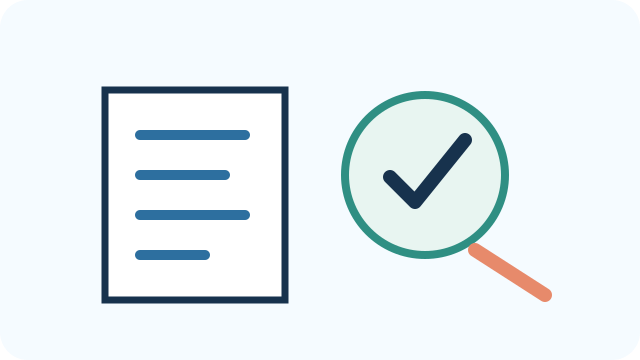

Prepare yourself, then facilitate the student meeting
Start by experiencing a short version of the student thinking. When you are ready to teach, switch to the Student meeting view and choose one or two 45-minute meetings.

Get oriented
Experience prototyping before you facilitate it
Try choosing the smallest thing that can answer a design question. Then notice when AI is actually needed in the learner-facing experience.

Try the student thinking
A team wants to know whether comparing physical lines helps a learner connect steepness to rise/run. What should they build first?
Choose one, then check what you notice.
Compare these two AI prompts: “Teach slope” and “Ask the learner to predict which line is steeper, explain why, measure rise/run, then give one hint only after an attempt.” Notice what the second prompt specifies about learner thinking.

Notice what was hard
What was difficult or tempting?
- Where did you want to jump to a solution?
- What information did you realize you were missing?
- What might a student need modeled rather than merely explained?

Learn the idea
The idea behind the activity
A prototype is an experiment, not a miniature final product. Productive struggle means the learner attempts meaningful thinking before help arrives. AI belongs only when its capabilities improve the learning interaction.

Plan one facilitation move
Prepare one move for your students
Choose one project idea you can use to model “What are we trying to learn from this prototype?” Be ready to steer students toward the least complicated product form that can answer that question.

Choose the meeting length
Choose the student meeting length
Use one 45-minute meeting as the minimum viable path, or two 45-minute meetings when you have time for more practice, discussion, and revision.
Showing the 1 × 45-minute Lesson Plan.
Know the purpose
Your goal
Students will choose a product family and concrete prototype form based on the learning goal, create the smallest testable version, preserve productive learner thinking, and use AI only when it adds a justified capability.
Students are designing something that may help themselves or someone else learn. At the same time, they should be able to explain what this stage taught them about human learning and about the useful roles and limits of AI.
Why it matters
A prototype is an experiment, not a miniature final product. The team should build the least expensive version that lets them observe the learning interaction.
This lesson also keeps technical complexity in perspective. A printable activity, physical game, practice routine, role-play, AI-generated resource, conversational AI tool, multimedia resource, or advanced app can all be legitimate outcomes. The best form is the one that fits the learning problem and can be tested safely.
Do → Notice → Explain → Get feedback → Try again
Students do not have to choose between “AI” and “hands-on.” A reusable AI tool can send a learner into a physical or social activity, then help them make sense of what happened afterward.

Get ready
Before you meet
- Confirm that the team has 2–3 shortlisted ideas from Ideate and has not already committed to a polished product.
- Open the student Guided Build Planner and review the Prompt Builder branch only if conversational AI may be appropriate.
- Gather low-resolution prototyping materials before opening development platforms: paper, cards, sticky notes, markers, sample content, or simple wireframing materials.
- Confirm which technology platforms are approved and what account, privacy, and accessibility constraints apply.
- Prepare one example of a very small prototype that answers one question without representing the final product.
Core materials
Shortlisted ideas; Student Prototype page; Guided Build Planner; paper/cards/markers; approved technology only when needed.
Safety and access to plan for Prototype
- Confirm that any platform, account, or AI system students plan to use is permitted for the students and setting.
- Minimize data. The prototype should not require sensitive or identifying learner information to function.
- Check readability, contrast, instructions, pacing, input method, captions or text alternatives, and whether a low-tech version can test the same learning interaction.
- For AI products, define what the system should refuse, what uncertainty should look like, and when it should direct the learner to a teacher or trusted adult.
- Make sure the prototype supports thinking rather than simply supplying answers.
Open the student Prototype page and inspect the Example Learning Tools, three build paths, Learning League Design Check, and one curated AI learning-tool example. Experience the sequence yourself before asking students to choose.

Run the lesson
Lesson Plan
Choose one complete path. The 1 × 45-minute version contains the essential activities. The 2 × 45-minute version adds time to practice, investigate, and revise without requiring one continuous 90-minute block.
Lesson Plan
Open each step as you reach it. The timing below is the complete plan for the version you selected.
1Choose the interaction before the technology0–5 minutes
How to do it
- Open the student Example Learning Tools and compare at least two very different products.
- Ask students to name what the learner actually does in each example and what AI does—or does not do.
- Introduce the three build paths: AI helps make a learning experience; reusable AI learning tool; advanced optional build.
- For each shortlisted idea, describe what the learner does first, what happens next, and what important thinking stays with the learner.
- Eliminate forms that add complexity without improving the learning interaction.
When AI belongs in the product
Key idea: AI is useful when the design genuinely benefits from variable language, adaptive conversation, generation, simulation, or another capability a simpler tool cannot provide as well.
Student-friendly language: “First justify the interaction. Then decide whether AI is needed to deliver it.”
Example: A role-play chatbot may benefit from varied responses; a fixed matching card game probably does not need AI.
Watch for: Do not use AI where outputs cannot be checked, privacy requirements cannot be met, or a simpler design does the job better.
2Use the Guided Build Planner to compare product forms5–20 minutes
How to do it
- Open the Guided Build Planner.
- Students answer one question at a time about learner action, feedback, conversation, time, technical experience, access, platform permission, and data.
- Compare the recommended concrete forms rather than automatically accepting the first result.
- Select one form and confirm the technical pathway that fits it.
- After the team chooses a direction, tell students they will use the Learning League Design Check before polishing.
Technology level is not project quality
Key idea: A simple physical activity can be a stronger learning design than an advanced app if it better supports the target learner action.
Say it this way: “Use only as much technology as the learning problem needs.”
Example: A ruler-and-whiteboard slope activity may reveal a relationship more directly than a chatbot.
Watch for: Do not reward technical complexity for its own sake.
3Plan the smallest prototype20–30 minutes
How to do it
- Continue in the same Guided Build Planner.
- Name the one question the prototype must answer.
- Specify what the learner must attempt before receiving support.
- List only the materials/features needed for that test and name what the team will deliberately postpone.
A prototype is an experiment
Key idea: The prototype only needs enough detail to answer the team’s next design question.
Say it this way: “Build the smallest thing that can teach us something about the idea.”
Example: Before coding a tutor, role-play one conversation with a student acting as the AI.
Watch for: Polish can hide a weak interaction and consume time that should go to testing.
4Build and role-play the interaction30–40 minutes
How to do it
- Create the minimum version using paper, cards, a storyboard, a sample routine, a mock conversation, or a very small digital build.
- Have one teammate act as the learner and another act as the tool/facilitator.
- Notice where the learner has to think and where the prototype may be doing too much for them.
- Make one quick revision before external testing.
- Before the advisor checkpoint, run the short Learning League Design Check. For an AI-supported product, include the “more than a one-time answer?” and “did AI do too much?” checks.
Preserve productive struggle
Key idea: Support should help the learner make progress while preserving the thinking that produces learning.
Student-friendly language: “If the tool does the important thinking for the learner, it may solve the task without supporting learning.”
Example: Instead of giving the operation for a word problem, ask the learner to identify givens, unknowns, and relationships, then offer a hint if needed.
Watch for: Watch for answer substitution disguised as “help.”
5Advisor checkpoint40–45 minutes
How to do it
- Ask the team to demonstrate the interaction with the simplest available materials.
- Ask what specific design question this version can answer.
- If the team cannot explain what the learner does, send them back to the planner before polishing.
Lesson Plan
Open each step as you reach it. The timing below is the complete plan for the version you selected.
1Revisit the learner interaction0–5 minutes
How to do it
- For each shortlisted idea, describe exactly what the learner would do first, what happens next, and what thinking should remain with the learner.
- Compare concrete forms such as printable resource, physical game, practice routine, interactive activity, AI-generated materials, conversational AI, role-play, multimedia, or advanced app.
- Eliminate forms that add complexity without improving the intended learning interaction.
When AI belongs in the product
Key idea: AI is useful when the design genuinely benefits from variable language, adaptive conversation, generation, simulation, or another capability a simpler tool cannot provide as well.
Student-friendly language: “First justify the interaction. Then decide whether AI is needed to deliver it.”
Example: A role-play chatbot may benefit from varied responses; a fixed matching card game probably does not need AI.
Watch for: Do not use AI where outputs cannot be checked, privacy requirements cannot be met, or a simpler design does the job better.
2Use the Guided Build Planner to choose a form and pathway5–20 minutes
How to do it
- Work through the planner one question at a time.
- Compare the top recommended forms with the team’s two Ideate finalists.
- Select the form that best supports the learner action under real access/time constraints.
- Confirm the technical pathway; remind students that pathways are not ranks.
- After the team chooses a direction, tell students they will use the Learning League Design Check before polishing.
Technology level is not project quality
Key idea: A simple physical activity can be a stronger learning design than an advanced app if it better supports the target learner action.
Say it this way: “Use only as much technology as the learning problem needs.”
Example: A ruler-and-whiteboard slope activity may reveal a relationship more directly than a chatbot.
Watch for: Do not reward technical complexity for its own sake.
3Finish the low-resolution prototype plan20–30 minutes
How to do it
- Define the prototype’s one test question.
- Name the learner attempt that must happen before help.
- List materials and access needs.
- Name features the team will not build yet.
- Choose the first tester and observation target.
A prototype is an experiment
Key idea: The prototype only needs enough detail to answer the team’s next design question.
Say it this way: “Build the smallest thing that can teach us something about the idea.”
Example: Before coding a tutor, role-play one conversation with a student acting as the AI.
Watch for: Polish can hide a weak interaction and consume time that should go to testing.
4Build the low-resolution version30–45 minutes
How to do it
- Create the minimum version using paper, cards, a storyboard, a sample routine, a mock conversation, or a very small digital build.
- Have one teammate act as the learner and another act as the tool/facilitator.
- Notice where the learner has to think and where the prototype may be doing too much for them.
- Make one quick revision before external testing.
Preserve productive struggle
Key idea: Support should help the learner make progress while preserving the thinking that produces learning.
Student-friendly language: “If the tool does the important thinking for the learner, it may solve the task without supporting learning.”
Example: Instead of giving the operation for a word problem, ask the learner to identify givens, unknowns, and relationships, then offer a hint if needed.
Watch for: Watch for answer substitution disguised as “help.”
1Role-play, inspect, and revise the interaction0–15 minutes
How to do it
- Run the prototype with one teammate as learner and one as the tool/system.
- Stop whenever the learner’s next action is unclear.
- Simplify instructions, hints, pacing, or materials before adding features.
2Use Prompt Builder only if conversation is essential15–30 minutes
How to do it
- Use this branch only when the learning interaction genuinely depends on reusable conversational AI.
- Before opening Prompt Builder, have students use Experience a designed AI learning interaction: try one example, notice the learner's role, inspect the prompt, and change one feature.
- Show the Prompt Builder visual explaining why learner, breakdown, strategy, feedback, activity, and evidence all change the tool design.
- Have students write the first prompt they would try, complete Guided Draft 1, test it, record what happened, and create Draft 2.
- Test Draft 2 and compare what improved rather than stopping after one revision.
- If AI only helps create materials, skip conversational Prompt Builder and return to the learner-facing prototype after verifying the generated content.
3Run a micro-test and revise30–40 minutes
How to do it
- Run the Learning League Design Check before the micro-test.
- If AI is involved, ask explicitly whether it is doing any thinking the learner needs to practice.
- Have one person try the smallest interaction without coaching from the builder.
- Observe one question: can they understand what to do and perform the target thinking?
- Make one revision based on what happened.
4Advisor checkpoint40–45 minutes
How to do it
- Ask what the prototype is testing.
- Ask why this product form is better than a simpler alternative for this learning interaction.
- Check privacy, access, and platform requirements before intended-learner testing.
Teach the key idea
Three ideas students should understand before they leave Prototype
1. More technical is not better
Students can choose: AI helps make an off-screen experience; a reusable conversational AI tool; or an advanced build. The learning problem determines the path.
2. AI should not take over the learning
Ask: “What important thinking does the learner still have to do?” Use the Learning League Design Check before students polish.
3. Design conversation before writing a long prompt
Students considering a reusable AI tool should first experience a designed example, inspect how it works, make one modification, and then enter Prompt Builder.
Check what students have
What students should have when they finish
- A justified broad product family and a concrete prototype form.
- A prototype test question and a clear statement of what is intentionally not being built yet.
- A low-resolution prototype that another person can actually try.
- Defined safeguards, accessibility considerations, and a low-tech or backup pathway.
- For AI products, a plan for verifying outputs and preserving productive struggle.
- A short explanation of what prototyping revealed about the learning interaction and whether AI added useful capability or unnecessary complexity.

Before the next meeting
Keep the project moving without adding another full lesson
Use only what fits your students and schedule. These tasks can be completed independently, with a teammate, or during a short advisor check-in.
- Have students finish only the minimum version needed for testing; postpone polish and extra features.
- Confirm any platform, privacy, accessibility, or account requirements before an AI-supported prototype is used with another learner.
- If conversational AI is part of the design, have students complete and test Prompt Draft 1 before the next meeting.
Next meeting: begin by asking students what they tried, what changed, and what they still need help figuring out.
Need more support or challenge?
Need more?
Choose only the option that responds to what you are seeing. Each adaptation has a clear purpose, a short procedure, and a stopping point so it does not turn into an extra lesson.
Optional extensionCompare two prototype forms
Use this when: The team is uncertain whether the same learning idea is better as a physical, social, or digital interaction.
How to run it
- Pick one learning interaction and represent it in two very small forms—for example cards and a mock chatbot.
- Use the same test question for both versions.
- Role-play both versions with the same teammate or peer.
- Compare which version preserves learner thinking, is easier to access, and produces clearer evidence.
- Choose one to carry into formal testing.
Materials: paper/card materials, mock conversation or wireframe, one comparison sheet.
You are ready to continue when: the team can justify the selected form using evidence from the two low-resolution versions.
Use when students need more supportPrototype on paper before opening technology
Use this when: Students are stuck in platform decisions, want to build too much, or cannot describe the learner interaction.
How to run it
- Close development platforms temporarily.
- Give the team a one-question prototype card: “What do we need to learn from this version?”
- Provide paper interface pieces, cards, arrows, or role cards.
- Build only the first 3–5 learner actions or conversation turns.
- Role-play it once, circle what was confusing, and revise before deciding whether technology is still needed.
Materials: storyboard template, paper buttons/cards, role cards, sample low-resolution prototype, one-question test card.
You are ready to continue when: students can demonstrate the core interaction without needing to explain unfinished technical features.
Use when students are ready for more challengeCompare versions or take an advanced build path
Use this when: The core interaction already works at low resolution and the team can explain why more technical complexity is useful.
How to run it
- Write 3–5 test cases, including an expected case and at least one edge case.
- Implement a second version, more independent prompt, or small advanced build.
- Run the same test cases on both versions.
- Check output verification, privacy, accessibility, and what thinking remains with the learner.
- Keep the advanced version only if it improves the learning interaction or testability.
Materials: approved development platform, edge-case checklist, test cases, version-comparison sheet.
You are ready to continue when: students can show what the added technical complexity improves and what new risks it introduces.